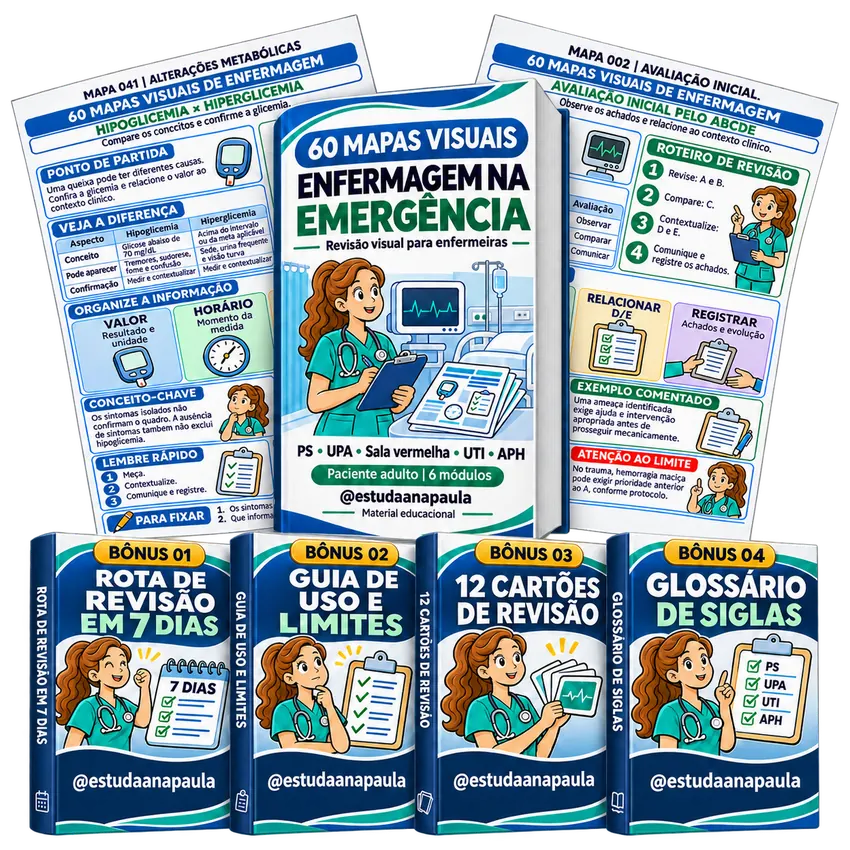
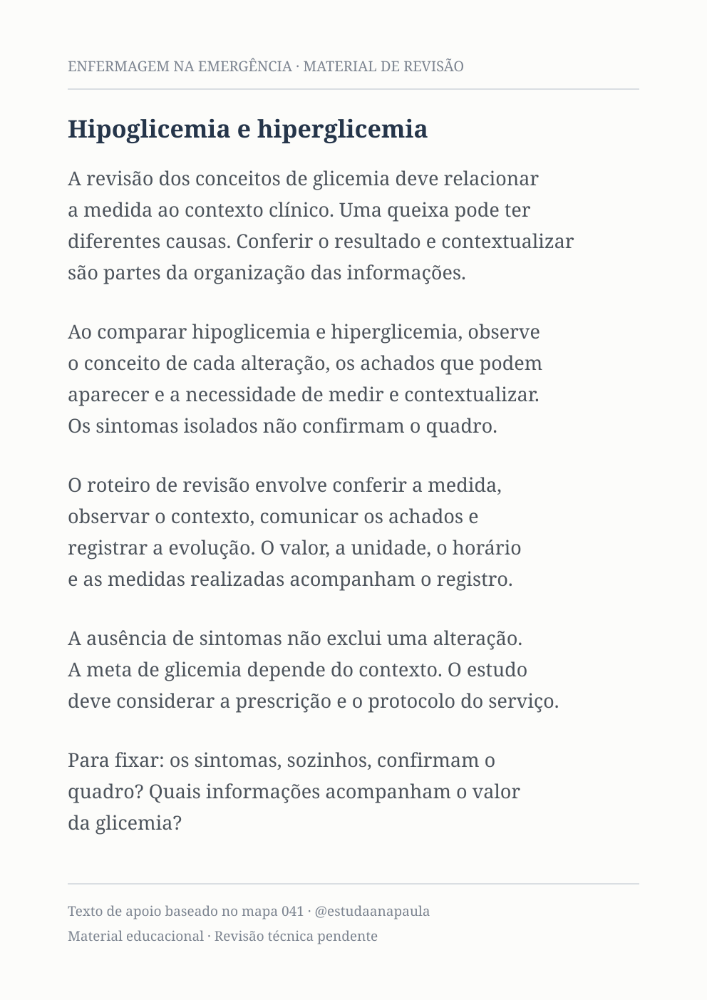
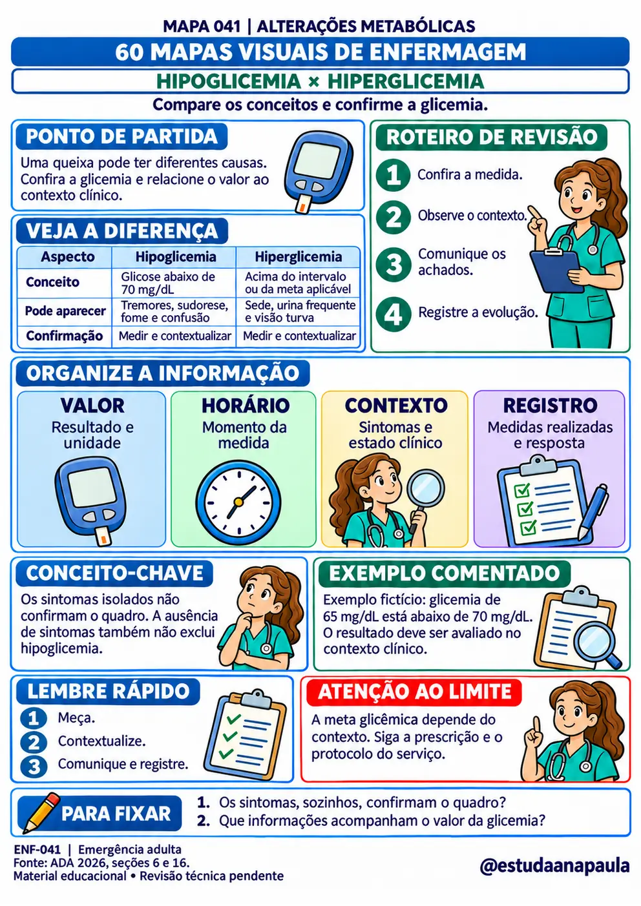
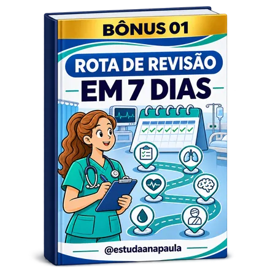
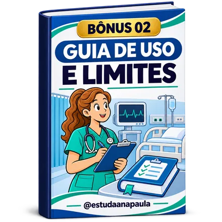
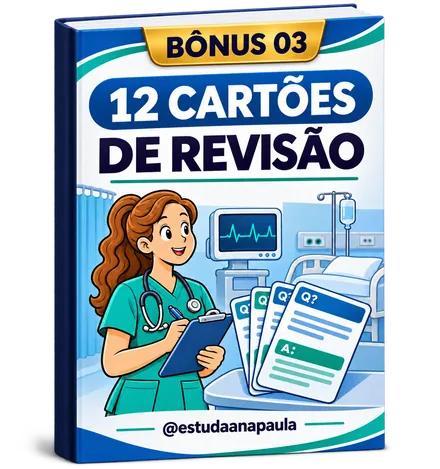
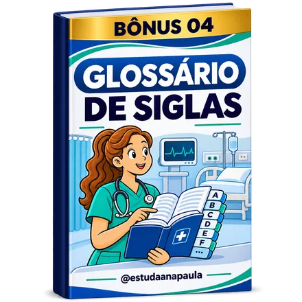

Seis módulos com comparações, esquemas e pontos de atenção para organizar sua revisão de emergência adulta, sem se perder em textos extensos. Um tema por página, em PDF para o celular ou impressão em A4.
O estudo aprofundado tem seu lugar. Mas retomar o conteúdo não precisa significar ler tudo de novo. Você pode começar por um tema, visualizar os conceitos e identificar o que merece uma nova revisão.
Arraste o divisor para comparar a organização em texto corrido com uma página real da coleção de mapas visuais.

Texto Corrido
Mapa MentalNo mapa, as diferenças aparecem em blocos e comparações. Você localiza o tema e segue um roteiro de revisão visual.
Um tema por página, com comparações, ilustrações, pontos de observação e perguntas de fixação. Abra o índice, encontre o assunto e retome sua revisão.
Arraste para visualizar páginas reais da coleção. Toque em uma página para ampliar.
Abra o índice clicável e escolha o assunto que deseja retomar.
Veja conceitos próximos lado a lado, com critérios organizados.
Retome informações para observar, comunicar e registrar.
Confira o que ficou e descubra o que precisa revisar novamente.
No seu momento de estudo, no celular ou no papel. Arraste para ver as possibilidades.
Cenas ilustrativas de uso. Produto digital; dispositivos e impressão não estão incluídos.
Escolha um tema e retome os pontos principais no seu momento de estudo.
Use os mapas como apoio para os assuntos vistos nas aulas e estágios.
Encontre cada assunto pelo índice e revise uma página de cada vez.
Compare informações relacionadas sem alternar entre várias anotações.
Receba 60 mapas organizados, sem precisar desenhar seus próprios resumos.
Leia os PDFs nos seus dispositivos ou imprima em A4 para sua pasta pessoal.
Número, título e conceito central para localizar o assunto e orientar a revisão.
Conceitos organizados em esquemas, colunas e blocos de observação.
Lembretes sobre o que não concluir de um dado isolado e perguntas para revisar.
Pontos para estudar a organização dos registros e referências no material.
ABCDE, sinais vitais, perfusão, reavaliação e organização do registro.
Dispneia, oxigenação, ventilação, dispositivos e comunicação.
Pressão, pulso, choque, monitorização e conceitos de ressuscitação.
Consciência, Glasgow, pupilas, AVC e observação neurológica.
Glicemia, hidratação, balanço, eletrólitos e resposta sistêmica.
Observações no trauma, movimentação, SBAR e transferência.
Quatro materiais de apoio para organizar sua revisão e retomar os conceitos da coleção. Todos fazem parte do pacote.

Uma sequência sugerida pelos seis módulos e uma revisão integrada para orientar seus próximos estudos.

Orientações para navegar no material e relacionar seu estudo à formação, às referências e aos protocolos.

Perguntas e respostas derivadas dos mapas para revisar os mesmos conceitos em outro formato.

As siglas usadas no material com significado e indicação dos temas em que aparecem.
Conceitos próximos organizados com critérios paralelos para retomar as diferenças na revisão.
Tema, esquema central, contexto, limites e perguntas de fixação distribuídos na mesma página.
60 mapas numerados, seis módulos, índice clicável e quatro bônus que fazem parte desta edição.
Receba os 60 mapas visuais de enfermagem na emergência e todos os quatro bônus em um único pacote digital. Pagamento único, sem mensalidade.
Sua revisão de emergência adulta em seis módulos visuais, com comparações, esquemas e perguntas de fixação.
Pagamento pela Cakto · Garantia de 7 dias após a compra
Conheça os 60 mapas visuais e os quatro bônus. Se decidir que o material não é para você, solicite o reembolso integral em até sete dias após a compra pelo canal informado no checkout e nas instruções de acesso.
Após a confirmação do pagamento, siga as instruções de acesso enviadas pela plataforma ao e-mail informado na compra.
O PDF completo com 60 mapas, seis PDFs por módulo com os mesmos mapas, 60 imagens individuais e os quatro bônus: Rota de Revisão em 7 Dias, Guia de Uso e Limites, 12 Cartões de Revisão e Glossário de Siglas.
Para enfermeiras e estudantes de enfermagem que buscam um apoio visual de estudo e revisão de emergência adulta. Pediatria e obstetrícia não fazem parte desta edição.
Sim. Os arquivos têm formato A4 e podem ser impressos. No celular, use um leitor de PDF e amplie a página para ler os detalhes. Tablet e computador permitem visualizar uma área maior.
A revisão técnica especializada permanece pendente nesta edição. O material é educacional e traz referências. Não substitui formação, avaliação clínica, prescrição, protocolos institucionais ou supervisão apropriada.
Não. Eles são um apoio visual para retomar conceitos. Relacione o estudo à sua formação, às fontes e aos protocolos aplicáveis ao contexto profissional.
O pagamento é único de R$ 37,90, sem mensalidade. Você pode baixar os arquivos e guardar nos seus dispositivos para uso pessoal. A compra não inclui licença para revenda ou redistribuição.
Troque a busca entre anotações soltas por 60 mapas visuais organizados em seis módulos de enfermagem na emergência adulta, prontos para seu momento de estudo.
QUERO GARANTIR MEU ACESSO AGORAMaterial digital · Quatro bônus incluídos · Garantia de 7 dias
Copyright © 2026 @estudaanapaula. Todos os direitos reservados.
Material educacional de revisão de emergência adulta. Revisão técnica especializada pendente. Não substitui formação, avaliação clínica, prescrição, protocolos locais ou supervisão. Produto digital; livros e dispositivos nas imagens são ilustrativos.